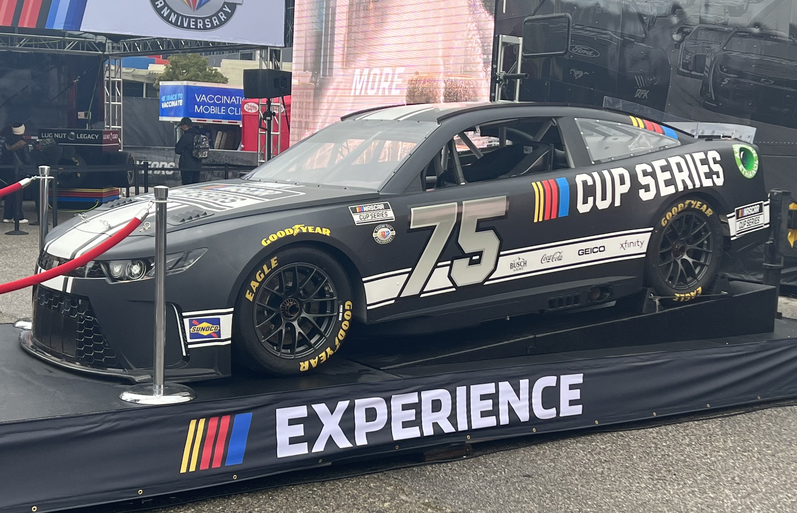

The 2025 SCRAFF Cup Series was one full of twists and turns, undercuts and upsets, celebrations and controversies, and very tight left turns.
This year's winner, #21 Harry Bearsley from North Melley, managed to rack up four wins and four stage wins, surviving the cut at all three rounds and managing to clinch the title. #48 Dan Jags of Holtston managed to make an impression as well, collecting a win early in the season and earning the Rookie of the Year title.